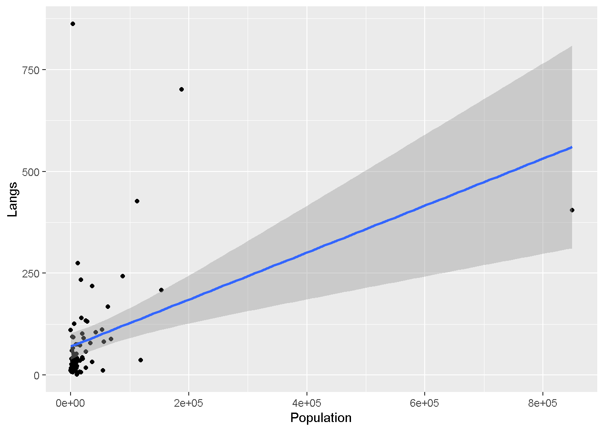

library("ds4ling")
library("tidyverse")
library("untidydata")
library("broom")
library("emmeans")Untitled
ld <- language_diversity %>%
mutate_if(is.character, as.factor) %>%
pivot_wider(
names_from = Measurement,
values_from = Value
) %>%
mutate(
lang_log = log(Langs),
area_log = log(Area),
pop_log = log(Population)
)
ld %>%
ggplot() +
aes (x = Population, y = Langs) +
geom_point() +
geom_smooth(method = "lm")`geom_smooth()` using formula = 'y ~ x'
dim(ld)[1] 74 11str(ld)tibble [74 × 11] (S3: tbl_df/tbl/data.frame)
$ Continent : Factor w/ 4 levels "Africa","Americas",..: 1 1 4 3 1 2 1 2 1 1 ...
$ Country : Factor w/ 74 levels "Algeria","Angola",..: 1 2 3 4 5 6 7 8 9 12 ...
$ Langs : num [1:74] 18 42 234 37 52 38 27 209 75 94 ...
$ Area : num [1:74] 2381741 1246700 7713364 143998 112622 ...
$ Population: num [1:74] 25660 10303 17336 118745 4889 ...
$ Stations : num [1:74] 102 50 134 20 7 48 10 245 6 13 ...
$ MGS : num [1:74] 6.6 6.22 6 7.4 7.14 6.92 4.6 9.71 5.17 8.08 ...
$ Std : num [1:74] 2.29 1.87 4.17 0.73 0.99 2.5 1.69 5.87 1.07 1.21 ...
$ lang_log : num [1:74] 2.89 3.74 5.46 3.61 3.95 ...
$ area_log : num [1:74] 14.7 14 15.9 11.9 11.6 ...
$ pop_log : num [1:74] 10.15 9.24 9.76 11.68 8.49 ...glimpse(ld)Rows: 74
Columns: 11
$ Continent <fct> Africa, Africa, Oceania, Asia, Africa, Americas, Africa, Am…
$ Country <fct> Algeria, Angola, Australia, Bangladesh, Benin, Bolivia, Bot…
$ Langs <dbl> 18, 42, 234, 37, 52, 38, 27, 209, 75, 94, 18, 275, 126, 79,…
$ Area <dbl> 2381741, 1246700, 7713364, 143998, 112622, 1098581, 581730,…
$ Population <dbl> 25660, 10303, 17336, 118745, 4889, 7612, 1348, 153322, 9242…
$ Stations <dbl> 102, 50, 134, 20, 7, 48, 10, 245, 6, 13, 9, 35, 11, 35, 10,…
$ MGS <dbl> 6.60, 6.22, 6.00, 7.40, 7.14, 6.92, 4.60, 9.71, 5.17, 8.08,…
$ Std <dbl> 2.29, 1.87, 4.17, 0.73, 0.99, 2.50, 1.69, 5.87, 1.07, 1.21,…
$ lang_log <dbl> 2.890372, 3.737670, 5.455321, 3.610918, 3.951244, 3.637586,…
$ area_log <dbl> 14.68334, 14.03601, 15.85846, 11.87755, 11.63179, 13.90953,…
$ pop_log <dbl> 10.152689, 9.240190, 9.760541, 11.684734, 8.494743, 8.93748…summary(language_diversity) Continent Country Measurement Value
Length:444 Length:444 Length:444 Min. : 0
Class :character Class :character Class :character 1st Qu.: 6
Mode :character Mode :character Mode :character Median : 30
Mean : 152424
3rd Qu.: 9635
Max. :8511965 mean(ld$lang_log)[1] 3.712302mod_0 <- lm(lang_log ~ 1, data = ld)
mod_1 <- lm(lang_log ~ 1 + pop_log, data = ld)
mod_2 <- lm(lang_log ~ 1 + area_log + pop_log, data = ld)
mod_3 <- lm(lang_log ~ 1 + area_log + pop_log + pop_log:area_log, data = ld)
summary(mod_0)
Call:
lm(formula = lang_log ~ 1, data = ld)
Residuals:
Min 1Q Median 3Q Max
-3.7123 -0.8648 -0.0234 0.8283 3.0470
Coefficients:
Estimate Std. Error t value Pr(>|t|)
(Intercept) 3.7123 0.1481 25.07 <2e-16 ***
---
Signif. codes: 0 '***' 0.001 '**' 0.01 '*' 0.05 '.' 0.1 ' ' 1
Residual standard error: 1.274 on 73 degrees of freedomsummary(mod_1)
Call:
lm(formula = lang_log ~ 1 + pop_log, data = ld)
Residuals:
Min 1Q Median 3Q Max
-3.7453 -0.7561 0.0533 0.6575 3.3979
Coefficients:
Estimate Std. Error t value Pr(>|t|)
(Intercept) 0.33824 0.80976 0.418 0.677
pop_log 0.36709 0.08689 4.225 6.91e-05 ***
---
Signif. codes: 0 '***' 0.001 '**' 0.01 '*' 0.05 '.' 0.1 ' ' 1
Residual standard error: 1.148 on 72 degrees of freedom
Multiple R-squared: 0.1986, Adjusted R-squared: 0.1875
F-statistic: 17.85 on 1 and 72 DF, p-value: 6.91e-05summary(mod_2)
Call:
lm(formula = lang_log ~ 1 + area_log + pop_log, data = ld)
Residuals:
Min 1Q Median 3Q Max
-3.5334 -0.7204 0.1263 0.6593 3.3114
Coefficients:
Estimate Std. Error t value Pr(>|t|)
(Intercept) -1.0096 1.3681 -0.738 0.4630
area_log 0.1557 0.1276 1.220 0.2265
pop_log 0.2946 0.1050 2.804 0.0065 **
---
Signif. codes: 0 '***' 0.001 '**' 0.01 '*' 0.05 '.' 0.1 ' ' 1
Residual standard error: 1.144 on 71 degrees of freedom
Multiple R-squared: 0.2151, Adjusted R-squared: 0.193
F-statistic: 9.728 on 2 and 71 DF, p-value: 0.0001845summary(mod_3)
Call:
lm(formula = lang_log ~ 1 + area_log + pop_log + pop_log:area_log,
data = ld)
Residuals:
Min 1Q Median 3Q Max
-3.3389 -0.6525 0.0560 0.7284 3.5035
Coefficients:
Estimate Std. Error t value Pr(>|t|)
(Intercept) 16.22396 6.09428 2.662 0.00962 **
area_log -1.19984 0.48380 -2.480 0.01555 *
pop_log -1.61397 0.66686 -2.420 0.01811 *
area_log:pop_log 0.14870 0.05137 2.895 0.00506 **
---
Signif. codes: 0 '***' 0.001 '**' 0.01 '*' 0.05 '.' 0.1 ' ' 1
Residual standard error: 1.089 on 70 degrees of freedom
Multiple R-squared: 0.299, Adjusted R-squared: 0.269
F-statistic: 9.953 on 3 and 70 DF, p-value: 1.515e-05#tables and plots